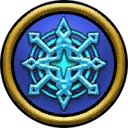
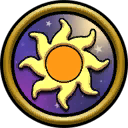
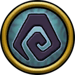

Next
⚙
Choose Mark Skin



Close
Zoom Speed
Arcs Selected (Currently does nothing)
Arc 1 (Wizard City - Dragonspyre)
Side Arc (Grizzleheim, Wysteria)
Arc 2 (Celestia - Khrysalis)
Arc 3 (Polaris - Empyrea)
Settings
Close
Place your Mark!